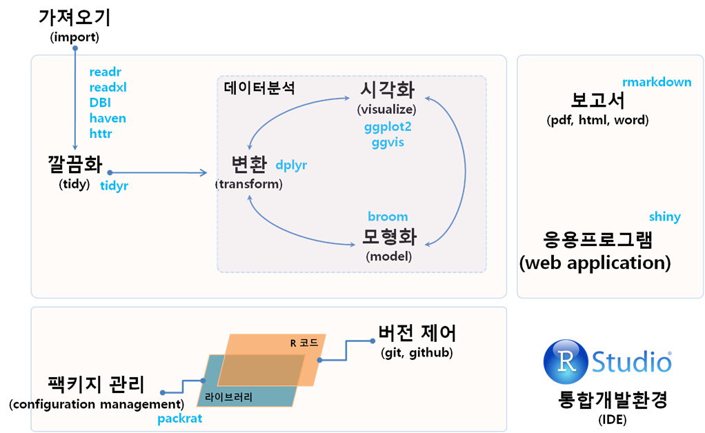
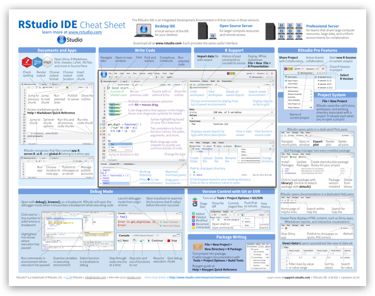

데이터 과학
RStudio 개발환경과 단축키
학습 목표
- RStudio 개발환경 인프라를 기반으로 한 데이터 과학 툴체인 아키텍처를 이해한다.
- 데이터과학 공학을 기반으로 한 아키텍처 각 구성요소와 연관성을 이해한다.
- RStudio IDE 개발환경을 살펴보고, 자주 활용하는 단축키를 숙지한다.
1. RStudio 개발환경 인프라
RStudio 진영에서 제안하는 데이터 과학 툴체인은 다음과 같이 구성된다.
readr 팩키지를 비롯한 다양한 데이터 가져오기 팩키지를 통해서 파일 형식 데이터 뿐만 아니라 서비스형식의 데이터도 불러올 수 있고, 필요에 따라서는 rvest를 활용하여 크롤링해서 데이터를 긁어 오는 것도 가능하다.
tidyr 팩키지를 활용하여 데이터를 깔끔히 정제한 뒤에 dplyr에 내장된 데이터 분석 동사를 활용하여 자유자재로 분석을 수행하고 나서, 이를 시각화와 모형화를 위한 입력값으로 활용한다.
데이터분석과정이 완료되면 두가지 최종 제품이 결과물로 산출된다. 하나는 보고서 형태로 일반 책이나 논문을 산출물로 생각하면 좋다. 책이나 논문은 HTML, PDF, 워드파일이 이에 해당되는 사례다. 또하나는 응용프로그램으로 일반적인 웹앱으로 생각하면 된다. 이를 위해 shiny라는 팩키지를 활용한다.
데이터를 불러와서, 변환한고, 분석하고, 모형개발과 시각화, 그리고 최종 데이터과학제품으로 이어지는 전체 과정은 R 코드와 문서를 버젼제어 해야하고, 동시에 팩키지 관리도 이루어져야 재현가능한 과학과 제품개발이 가능해진다. 소스코드제어를 위해 R에서는 Git과 GitHub를 연결해서 사용하고, 팩키지 관리를 위해서는 packrat를 사용하여 팩키지 대상과 팩키지 버젼도 이력관리한다.
물론 이 모든 것은 RStudio IDE 라는 R전용 GUI 통합개발환경 위에서 개발이 가능하다.

2. RStudio에서 가장 많이 사용하는 단축키 1 2
통합개발환경(Integrated Development Environment, IDE)은 소프트웨어를 개발할 때, 코딩, 디버깅, 컴파일, 배포 등 프로그램 개발과 관련된 모든 작업을 하나의 통합된 개발환경에서 작업할 수 있도록 환경을 제공하는 소프트웨어다. RStudio는 데이터 과학 언어 R을 위한 특화된 통합 개발환경을 제공하고 있다.

키보드 특수키 설정 3 {.callout}
- ⌘ : Command (명령키,
⌘)- ^ : Control (컨트롤키,
^) 혹은 ✲ (윈도) ⎈ (리눅스)- ⎇ : Alt (알트키,
⎇)- ⏎ : Enter (엔터키,
⏎)- ⇧ : Shift (쉬프트키,
⇧)- ⌥ : Option (옵션키,
⌥)- ↹ : Tab (탭키,
↹)- ↑ : Upwards Arrow (윗쪽 화살표,
↑)
| 단축키 | 윈도우 | 맥 |
|---|---|---|
| 마지막 명령어 | ↑ | ↑ |
| 마지막 매칭 명령어 | ^ + ↑ | ⌘ + ↑ |
| 자동 탭완성 | ↹ | ↹ |
| —- 실행 —- | ||
| 선택영역 실행 | ^ + ⏎ | ⌘ + ⏎ |
| Source | ^ + ⇧ + S | ⌘ + ⇧ + S |
| Source + 메아리(Echo) | ^ + ⇧ + ⏎ | ⌘ + ⇧ + ⏎ |
| —- 화면 전환 —- | ||
| 코딩 패널창 전환 | ^ + 1 | ^ + 1 |
| 콘솔 패널창 전환 | ^ + 2 | ^ + 2 |
| —- 코딩 단축키 —- | ||
<- |
⎇ + - | ⌥ + - |
%>% |
^ + ⇧ + M | ⌘ + ⌥ + M |
| 주석처리 | ^ + ⇧ + C | ^ + ⌥ + C |
| 주석제거 | ^ + ⇧ + / | ^ + ⌥ + / |
| 실행취소 | ^ + Z | ⌘ + Z |
| 다시 실행 | ^ + ⇧ + Z | ⌘ + ⇧ + Z |
| 단축키 참조 | ⎇ + ⇧ + Z | ⌥ + ⇧ + Z |
| 다중커서 | ^ +⎇ + ↑ | ^ + ⌥ + ↑ |
| ^ +⎇ + ↓ | ^ + ⌥ + ↓ | |
| ^ +⎇ + 클릭 | ^ + ⌥ + 클릭 | |
| —- 찾기 및 바꾸기 —- | ||
| 줄 찾아가기 | ⇧ + ⎇ + G | ⌘ + ⇧ + ⌥ + G |
| 찾기 바꾸기 | ^ + F | ⌘ + F |
| 파일에서 찾기 | ^ + ⇧ + F | ⌘ + ⇧ + F |
| 모두 접기 | ⎇ + O | ⌘ + ⌥ + O |
| 모두 펴기 | ⎇ + ⇧ + O | ⌘ + ⌥ + ⇧ + O |